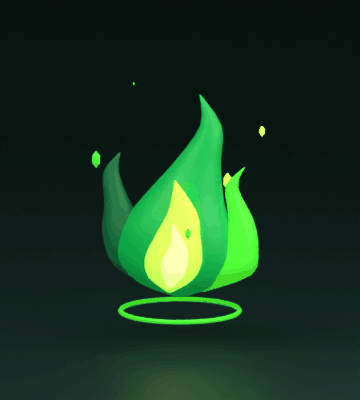
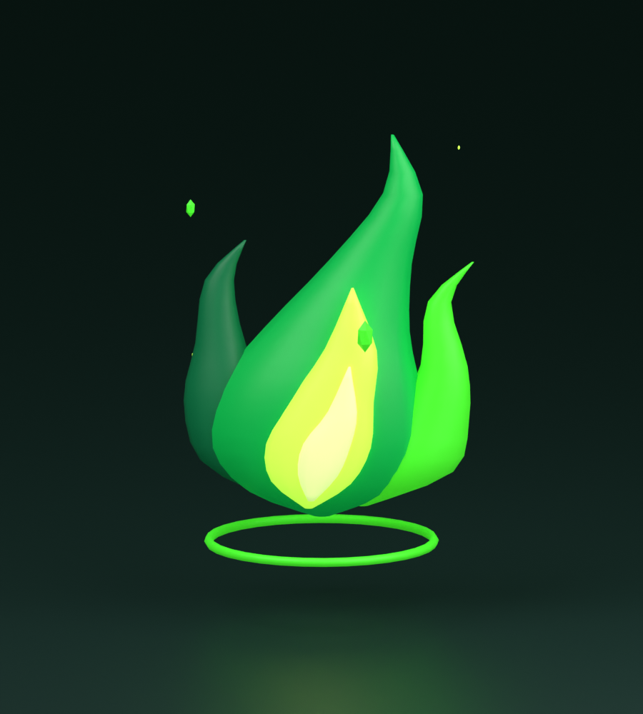
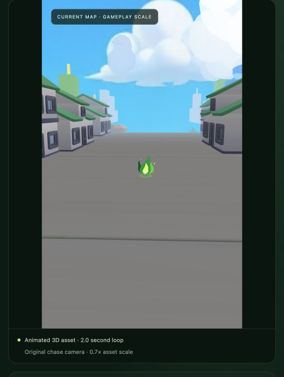
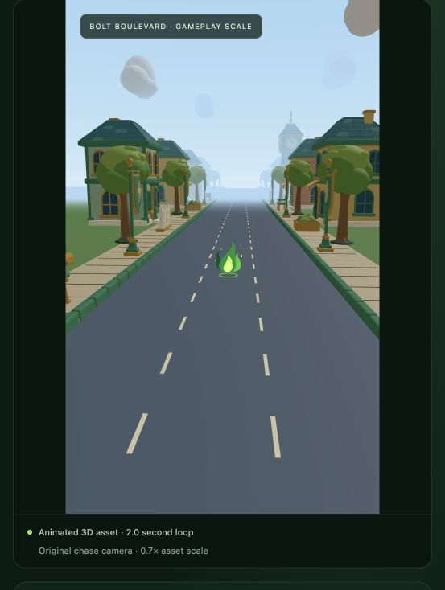

BOLT RUNNER / PHASE 01
Green Fire
A separate animated 3D pickup with an emerald flame, bright lime core, gentle hover and rising sparks. These previews show the actual model.
123.9 KiB · 3,184 triangles · 15 meshes · 5 embedded materials · no textures
One GreenFire_Idle clip · 2-second loop · Y up · +Z front · recommended scale 0.7


Idle animation
A two-second loop rendered from the editable Blender model. Reduced-motion preferences show a still frame instead.
Model detail
Volumetric flames and emissive colors. Geometry, materials and animation travel together in one GLB.

Current Map
The preview UI with a 390px-wide gameplay canvas. The pickup uses 0.7 scale and the game's chase camera.

Bolt Boulevard
The same 390px-wide gameplay canvas inside the preview UI, with Boulevard's road, buildings and greenery.
Phase 1 scope: pickup artwork and idle animation. Collection, stored charges, casting and smoke impacts come later. The map images are visual preview scenes; the ability is not installed in gameplay.